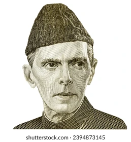

Quaid-e-Azam Muhammad Ali Jinnah
Speech on Quaid-e-Azam Muhammad Ali Jinnah Honorable guests, respected teachers, and dear students, It is an honor for me to stand before you today and speak about one of the greatest leaders in the history of the subcontinent, Quaid-e-Azam Muhammad Ali Jinnah. Muhammad Ali Jinnah was born on December 25, 1876, in Karachi, which was then a part of British India. From a very young age, he exhibited qualities of leadership, intelligence, and determination. He was educated in Bombay (now Mumbai) and later went to England to study law at Lincoln's Inn. Little did the world know that this young law graduate would go on to become the founding father of Pakistan. Jinnah’s political journey began with his involvement in the Indian National Congress, where he initially worked towards Hindu-Muslim unity. However, as time passed, he recognized the distinct cultural, religious, and social identities of Muslims in the subcontinent. His vision for a separate nation for Muslims grew stronger, as he understood that the Muslims' aspirations and interests would not be adequately represented in a united India dominated by the Hindu majority. Jinnah's leadership and determination led to the demand for Pakistan. His iconic speech on August 11, 1947, in the Constituent Assembly of Pakistan, where he outlined his vision for a free and just society, is one of the most memorable speeches in history. In it, he said, “You are free; you are free to go to your temples, you are free to go to your mosques, or to any other place of worship in this State of Pakistan. You may belong to any religion, caste, or creed—that has nothing to do with the business of the State.” This profound statement emphasized his belief in the importance of tolerance, unity, and freedom of religion. Jinnah's vision for Pakistan was one of a progressive and inclusive nation, where every citizen, regardless of their background, could live with dignity and equal rights. Throughout his life, Quaid-e-Azam faced immense challenges. He fought against British colonial rule, he struggled against the oppression faced by Muslims, and he fought against political and social inequalities. His unwavering commitment to his cause, his sharp intellect, and his diplomatic skills were key in the formation of Pakistan in 1947. It was under his leadership that the dream of a separate homeland for Muslims of the subcontinent became a reality. Sadly, Quaid-e-Azam did not live long after the creation of Pakistan. He passed away on September 11, 1948, just over a year after Pakistan gained its independence. His death left a void that has never been filled, but his legacy lives on. Today, Quaid-e-Azam is not only remembered as the founder of Pakistan, but also as a champion of justice, equality, and democracy. His life serves as an inspiration to us all, reminding us that with vision, dedication, and determination, no challenge is insurmountable. As citizens of Pakistan, it is our duty to uphold the values he stood for—unity, faith, and discipline—and work towards making his vision of a prosperous and peaceful Pakistan a reality. Thank you.